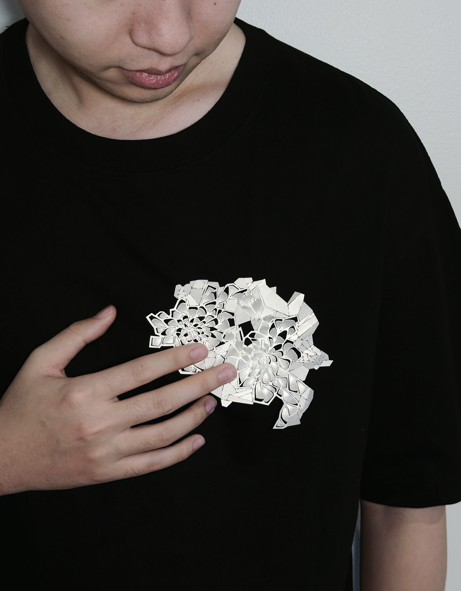

My work delves into the intertwined relationships between nature, society, and the human psyche. Through jewelry, I explore how external pressures and internal conflicts shape our perceptions and behaviors.
I utilize a diverse set of techniques, from traditional hand forging and enamel work to advanced 3D modeling, to capture the tension between organic and constructed forms. The materials I choose are significant: metals symbolize resilience and constraint, while enamel introduces an element of fragility and vibrancy. My creative process involves both traditional craftsmanship and digital innovation, blending the tactile with the technological to create pieces that are both intimate and confrontational.
In my work, I aim to provoke reflection on the ways we are both nurtured and restricted by the environments we inhabit—whether those are natural landscapes, social structures, or internal states of mind. I want my pieces to be both visually striking and conceptually profound, sparking conversations about the visible and invisible forces that shape our lives.
